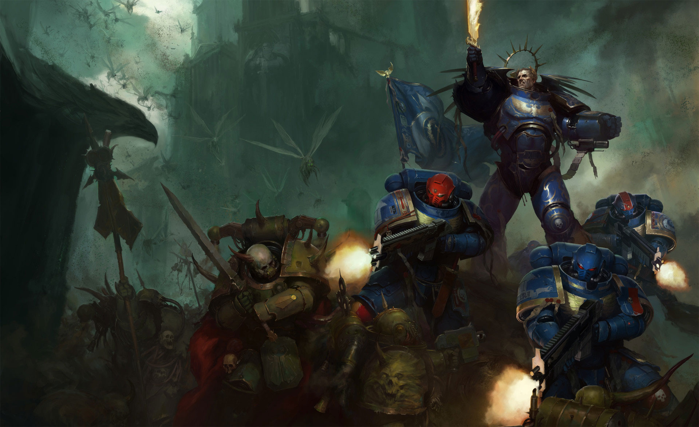

Macragge's Database
Greetings, Battle-Brother. You are currently viewing the restricted data-slates of our holy Primarch: Roboute Guilliman.
Chapter Status: Active
We march for Macragge! And we shall know no fear.
Initializing the Primarch's data-slates...
[ Clicca per continuare ]
Greetings, Battle-Brother. You are currently viewing the restricted data-slates of our holy Primarch: Roboute Guilliman.
We march for Macragge! And we shall know no fear.
Roboute Guilliman is one of the most influential figures in the history of the Imperium of Man, serving as Primarch of the Ultramarines, Lord Commander of the Imperium, and architect of its modern structure. Known for his strategic brilliance, administrative genius, and adherence to order, Guilliman has shaped humanity’s survival across millennia.
During the Great Crusade, Guilliman established himself not only as a supreme military commander but also as a statesman. He built the realm of Ultramar into a model of efficiency and prosperity, often regarded as the ideal expression of Imperial governance. He played a crucial role in expanding the Imperium’s borders and strengthening its internal stability. Guilliman was also instrumental in the creation of the Codex Astartes, a foundational text that restructured the Space Marine Legions into smaller Chapters after the Horus Heresy.
Following the devastating civil war known as the Horus Heresy, Guilliman assumed a leading role in stabilizing the Imperium. He became one of the primary architects of its recovery, enforcing reforms that prevented any single commander from wielding excessive power again. However, during a confrontation with the Daemon Primarch Fulgrim, Guilliman was mortally wounded. To preserve his life, he was placed in a state of stasis, where he remained for over ten thousand years.
In the closing years of the 41st Millennium, Guilliman was resurrected through the combined efforts of Archmagos Belisarius Cawl and the Eldar Yvraine. His return marked a turning point for the Imperium. Upon awakening, Guilliman found a decayed and fragmented empire. He immediately assumed leadership as Lord Commander and launched the Indomitus Crusade, a massive military campaign aimed at reclaiming lost territories and stabilizing the Imperium following the catastrophic Great Rift.
The Indomitus Crusade was Guilliman’s grand strategic response to the galaxy-wide upheaval caused by the Warp. It sought to: reconnect isolated Imperial worlds, reinforce defensive lines, push back Chaos incursions and to establish new bastions of Imperial control; Guilliman also oversaw the introduction of the Primaris Space Marines—an improved generation of Astartes created by Belisarius Cawl.
Guilliman re-established the Tetrarch system in Ultramar, appointing trusted leaders to govern regions efficiently. His administrative reforms extended beyond Ultramar, influencing the Imperium at large. He has worked to restore reason and structure to Imperial governance, often clashing with entrenched institutions such as the Ecclesiarchy.

//:Roboute Guilliman fighting alongside a lieutenant and a sergeant of the1st Company against a large some Plague Marines, serveants of Mortarion, their Primarch loyal to Nurgle, the chaos god of disease and decay. :\\
| Wargear | Type | Description | Notable Abilities |
|---|---|---|---|
| Armor of Fate | Power Armor (Relic) | A highly advanced suit of power armor created and modified by Belisarius Cawl to sustain Guilliman’s life after his resurrection. | Provides enhanced durability, life-support systems, and regenerative capabilities. Allows Guilliman to survive otherwise fatal injuries. |
| Emperor’s Sword | Melee Weapon (Relic Blade) | A flaming sword once wielded by the Emperor, now carried by Guilliman. | Engulfed in divine fire; capable of inflicting permanent damage on daemonic entities and bypassing Warp-based defenses. |
| Hand of Dominion | Power Fist / Ranged Weapon | A massive gauntlet combining a power fist with an integrated bolter. | Delivers devastating melee blows while also functioning as a ranged weapon. Symbolizes Guilliman’s authority and strength. |
| Laurels of Victory | Honorific / Relic | A symbolic adornment representing Guilliman’s victories and leadership. | Inspires nearby allies and reinforces morale among Imperial forces. |
| Primarch Physiology | Biological Enhancement | As a Primarch, Guilliman possesses superhuman strength, speed, and intellect. | Extreme resilience, rapid healing, and unmatched strategic thinking. |